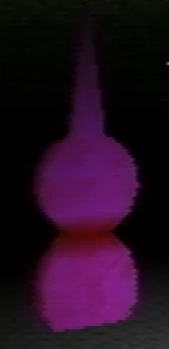
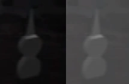
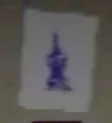
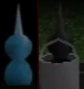

Tool

Tools are interactive objects that first appear in Petscop 2.
More tools have appeared in subsequent episodes, varying in color and uses.
This article classifies them by color given the lack of any official name other than "tool".
Red tool
The red tool is the first tool that Paul finds, in Petscop 2. It is found in one of the rooms of the Newmaker Plane (fan-named the "tool room"), directly in front of the screen that allows the player to view the windmill.
Marvin also interacts with the red tool, in a recording shown during Petscop 20.
It only responds to pre-programmed select questions, with any invalid inputs simply yielding the phrase "I don't know".
Questions
The following questions are asked during Paul's playthroughs;
- "What?"
- Response: "I don't know" (default response)
- "Who is Tiara?"
- Response: "Petscop kid very smart"
- "Where am I?"
- Response: "Under the Newmaker Plane"
- "Who am I?"
- Response: "Newmaker"
- "Who are you?"
- Response: "Tool" (accompanied by a crude drawing of the tool shape)
- "Remember being born?"
- Response: "I'm not Tiara"
- "Where is my house?"
- Response: "You'll never go home"
- "Where is the school?"
- Response: "You can't go back in time"
- "What month is it?"
- Response: Red tool shows the calendar of the year 2017 [1].
- "What year is it?"
- Response: Red tool shows the red calendar, corresponding to the year 2017
- "Where was the windmill?"
- Response: Censored by the video; Presumed to be text, possibly of real-life geographic coordinates. [2].
The following questions are stated to be asked to the red tool in Petscop 5's description being asked before the video was recorded, but only resulted in "I don't know" as a response;
- "Care?"
- "Mike?"
- "Michael?"
- "Who is Care?"
- "Who's Care?"
- "Who is Mike?"
- "Who's Mike?"
- "Who is Michael?"
- "Tiara?"
- "Who's Tiara?"
- "Where are you?"
- "When am I?"
- "What is NLM?"
- "NLM?"
- "Newmaker Plane?"
- "Who is Newmaker?"
- "Newmaker?"
- "What is Petscop?"
- "Petscop?"
- "How to see windmill?"
- "See windmill?"
- "Windmill?"
- "What is this?"
- "bababababab?"
- "!?"
- "??"
The following questions are also mentioned to be asked in Petscop 5's description after the recordings that make up the video, also resulting in "I don't know" as a response;
- "Who is Marvin?"
- "Who's Marvin?"
- "Marvin?"
The following questions are asked by Marvin in Petscop 20;
- "did you find lina?"
- Response: "I don't know" (default response)
- "who is your boss?"
- Response: "I don't know" (default response)
- "what year is it?"
- Response: Red tool shows the green calendar, corresponding to the year 1997
Pink tool
{kind=link}

Pink tool
While Paul was trying to ask the red tool questions in Petscop 5, it unexpectedly turns pink. While pink, the tool's responses are slower. Its color and the font used in the answers heavily imply that it is being controlled by whoever is using Draw Mode.
In Petscop 7, after reading "COME HERE" in the Quitter's Room, Paul returns to the tool room, where the pink tool is already active and displaying a message.
It is implied that Tiara is speaking through the pink tool due to its seeming relation with Draw Mode, which she utilizes and refers to in multiple instances.
Questions (Petscop 5)
Who are you?
Answer: TURN OFF PLAYSTATION
Why?
Answer: MARVIN PICKS UP TOOL HURTS ME WHEN PLAYSTATION ON
Questions (Petscop 7)
Answer already there when Paul enters the room: I LOVE YOU NEWMAKER PLEASE SHOW MARVIN WHERE HIS HOUSE IS
Who are you?
Answer: GO THERE AND HE’LL FOLLOW YOU HIS DAUGHTER IS THERE
Remember being born?
Answer: ALSO WANTS 1000 PIECES FOR “MACHINE BEYOND SCHOOL BASEMENT STAIRWAY"
Other tools
Green tool
{kind=link}
The green tool is shown in the school, first seen in Petscop 11. It is animated, spinning and glowing while on screen.[3] Its purpose is to interact with the party hat shaped object in the computer room (which gives the players its surrounding pieces, and deliver 500 pieces to the machine to complete it. However, this is not utilized until its final appearance in Petscop 23.
It appears in all instances of the school being visited, and is activated a few times in Petscop 11, but only to move it around and not to do anything. It reappears in Petscop 15, though it is not activated at any point.
White tool
{kind=link}

{kind=link}
White tool, brightened image on the right
A white tool is seen inside of the windmill in Petscop 9.[4]
The player can interact with the white tool, which causes it to move towards the figure of Lina Leskowitz spinning in the mechanisms as the screen fades to black. When the inside of the windmill is seen again, the figure has disappeared and the gears are spinning in the opposite direction, making the windmill spin counterclockwise. [5]
After using the white tool, it removes the pieces from the cogs and the player receives 50 pieces.
Blue tool
{kind=link}

{kind=link}
On the walls in the tool room, multiple crayon drawings of a blue tool can be seen.
In Petscop 14, within the house during Strange situation, a stack of blue tool drawings are seen below a single slice of cake on a plate. After the player interacts with the cake, the following message is displayed:
"Go ahead and have a slice!"
"Oh, don't worry about those."
The word "those" most likely refers to the drawings.
Later in the episode, when the player enters the garage, the website displayed on the Tarnacop computer eventually shows an image of a blue tool.
{kind=link}
{kind=link}
Teal tool
{kind=link}

{kind=link}
In Petscop 13, Paul follows the road to the left of the house pushing a bucket along with him. In the middle of the road is a teal tool. The teal tool is similar in appearance to the green tool, but it behaves differently; it slightly rotates back and forth. This tool moves similarly to Roneth, keeping a constant distance from the player and ascending into the sky if they move too close to a set position.
Paul allows the teal tool to ascend and then pushes the bucket under it. When Paul walks to the right, the teal tool descends into the bucket of black paint, turning black after being covered in the paint. After moving the bucket with the teal tool to the house, Paul uses it to remove pieces from some objects on the table and receives 15 Pieces. The tool and bucket disappear afterwards.
Later in the episode, Paul is shown applying the same trick used to capture the teal tool to capture Roneth using the bucket from Wavey and Randice's room.
Small red tools
Smaller red tools are seen in the Child Library, on the tables of Care's, Mike's and Lina's rooms. They lie on the table's surface instead of standing upright, unlike other tools. These tools seem to be inert, as they cannot talk or be used for solving any kind of puzzle. However, they are theorized to be of some representative importance in their locations.
Theories
Tools seem to be in a generic shape for a multipurpose object. There seem to be three general sizes of tools that have varying classifications of use. Large tools serve communication purposes and can be asked questions, displaying some awareness, but possibly programmed. Medium tools can be interacted with in various ways to interact with other objects (mostly showing disassembly and the transfer of pieces), and often move around as if living. Small tools seem to be inactive and for minor uses. There is also the suggestion that tools can be used to injure others, which could possibly be classified under medium or small tools.
In line with Marvin's connection with music, tools resemble an awl, specifically the sharp tool used to soften the felt hammers in a piano.
It has been theorized the tools may be representative of a Jansen Mastoid Retractor, however this is not likely to be the case as Marvin was not a doctor and did not have reasonable means to obtain this device, this device is not used on the face (instead, it is used within the inner ear & larynx), and the instrument in question doesn’t resemble tools any more than an awl.
Tools also have a resemblance to the bulbous Bottle Gourd and the Chinese Taoist symbols that they inspired. They can symbolize infinity, among other things.
In line with the color theory, some of the colors the tools have may be representative of certain characters.